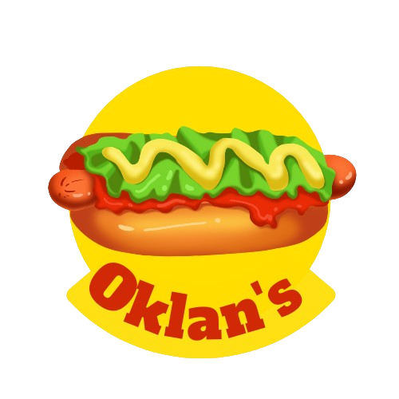

<nav class="navbar navbar-expand-lg">
  <div class="container-fluid">
    <a class="navbar-brand" routerLink="">
        
    </a>

    <div class="collapse navbar-collapse" id="navbarNavAltMarkup">
          <div class="nav">

          </div>
    </div>
  </div>
</nav><br><br><br>